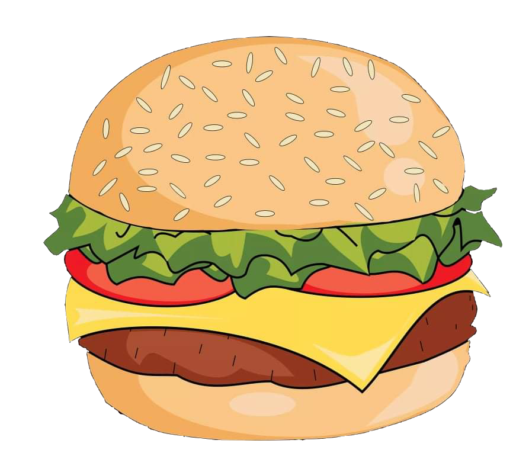

Бургер

Бургер
Продукти:
- питки
- маруля
- домати
- кашкавал
- свинска кайма
Начин на приготвяне:
Свинската кайма се оформя и се запича за 5 минути на двете страни. Кашкавалът се слага на запечената кайма когато е обърната вече веднъж до частично разтапяне. Питките се запичат по избор и се наслагват всичките продукти. Сосове се слагат по избор.